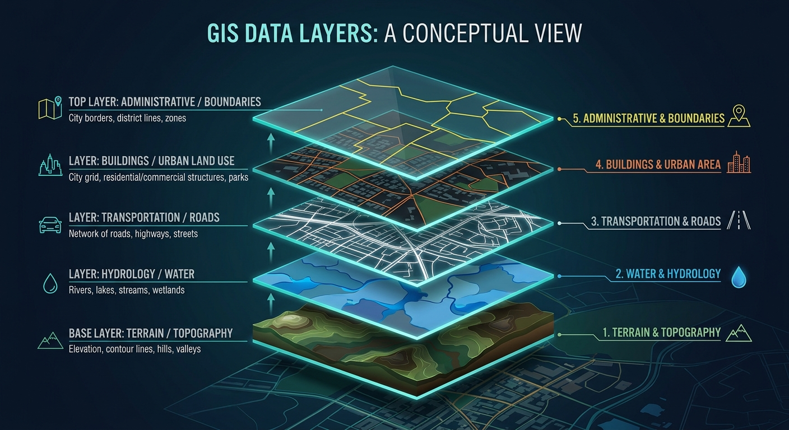
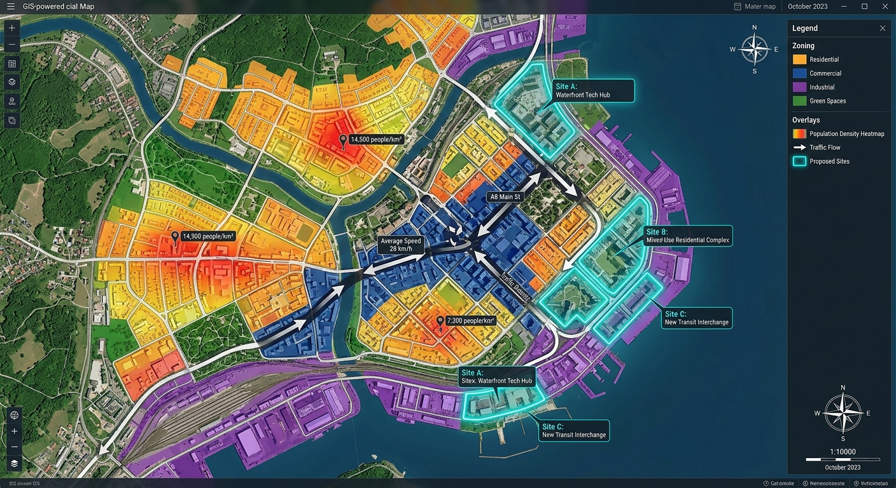
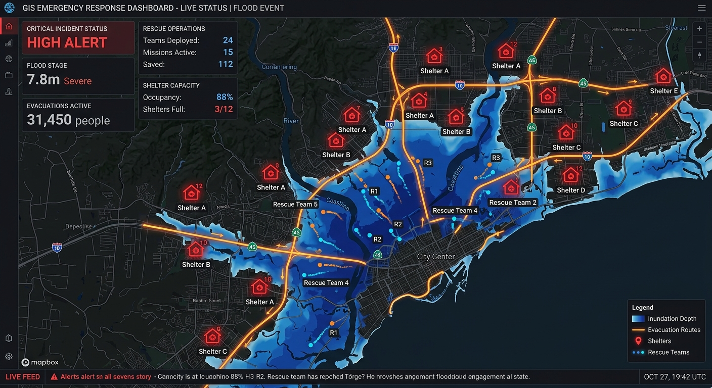

开场：三个你熟悉的小故事
在给你讲 GIS 的定义之前，我想先问你三个问题。它们看起来和地理信息系统毫无关系，但其实每一个背后都藏着 GIS 的身影。
故事 1外卖员是怎么"读心术"般选中最快路线的？
某个下雨的晚上，你饿得前胸贴后背，在 APP 上点了一份麻辣烫。下单后 28 分钟，骑手就敲响了你的家门 —— 他从 3 公里外的商家出发，穿过 5 个红绿灯、绕开一段施工的小巷、还避开了一个因为下雨而拥堵的十字路口。
这不是巧合，也不是骑手的神级记忆力。平台在下单那一刻，就把你家的坐标、商家的坐标、骑手的实时位置、每条道路的当前车速、红绿灯时长、甚至天气影响全部丢进了一个"地图大脑"。几毫秒之内，这个大脑计算出了几十条候选路线，挑出了最短、最不容易迟到的那一条。
这个"地图大脑"，就是 GIS（Geographic Information System，地理信息系统）的一种典型应用。
故事 2共享单车 APP 怎么知道你身边哪里有车？
早上赶地铁，你打开共享单车 APP，屏幕上立刻出现一张地图，上面密密麻麻点缀着小车车图标。你看到离你 50 米的便利店门口停了 3 辆，拐角的小区门口有 1 辆，再远一点的公园门口有十几辆。你点了"预约"，APP 还帮你画了一条走过去的步行路线。
在这个过程里，GIS 做了很多事：它知道你现在在哪里、每一辆车的 GPS 位置、每个还车点的几何范围、从你到车点的最近步行路径，甚至还能根据历史数据预测"这辆车 3 分钟后可能还在不在"。
你看到的那张简洁的地图背后，其实是一个非常"忙碌"的空间数据库。
故事 3新闻里的疫情热力图是谁做出来的？
2020 年以后，大家对"疫情地图"都不陌生了。打开新闻 APP，你会看到中国地图上不同省份染成不同的颜色，红色表示病例多，蓝色表示病例少；再放大到某个城市，甚至能精确到某个小区的感染情况。
这类地图的制作逻辑非常"GIS"：把来自医院、社区、交通部门的原始数据（谁在哪里、什么时候确诊）收集起来，加上每个地点的坐标，然后按行政边界做空间聚合，最后用颜色深浅可视化出来。GIS 在这里扮演的角色，就是把散落的表格数字"翻译"成了一眼就能看懂的空间故事。
看完这三个故事，你应该已经大概猜到 GIS 是个什么东西了 —— 它不是一个单独的 APP，也不是某个冷门的专业名词，而是现代生活里无处不在的一种"空间思维 + 技术工具"的组合。下面我们正式给它一个定义。
GIS 到底是什么？一句话定义
友好版定义
GIS 就是：给每一个数据加上位置坐标，然后让这些数据在地图上对话。
这句话听起来像废话，但它其实抓住了 GIS 的灵魂。传统的数据库里，一条记录可能是："张三，男，25 岁，工程师"。而在 GIS 的世界里，这条记录会变成："张三，男，25 岁，工程师，经度 116.407，纬度 39.904"。多了两个数字，整张 Excel 表就突然获得了"空间维度"，可以在地图上展示、分析、对比、计算。
更学术一点的定义是：GIS 是一种用于采集、存储、管理、分析、可视化地理空间数据的计算机系统。它的核心能力是处理"带有位置信息"的数据，并且让这些数据之间可以发生空间层面的交互 —— 比如"离我最近的三家咖啡店在哪里"、"这块土地在哪条河的上游"、"明天这场暴雨会影响哪些街道"。
"图层蛋糕"：理解 GIS 最直观的比喻
想象你在切一块千层蛋糕：最上面是奶油，中间是水果，下面是海绵胚，最底下是托盘。每一层单独看都是一种食材，但叠在一起就组成了一块完整的甜品。
GIS 的世界观和这块蛋糕几乎一模一样。同一个地区的信息被拆成了一层一层的"图层"（Layer）：道路是一层、建筑是一层、河流是一层、行政边界是一层、人口密度是一层、遥感卫星影像又是一层。每一层都是关于这片土地的一个"切片"。你可以随时打开或关掉某一层，也可以把几层叠在一起做分析。
这就是为什么你在高德地图上可以自由地打开/关掉"实时路况"、"卫星影像"、"公交"、"积水点"等开关 —— 因为它们本来就是一层一层独立存放的数据。你每次勾选一个选项，地图"蛋糕"里就多出一层奶油。
一个更具体的小例子
假设你想在某个城市开一家奶茶店。你打开地图后会怎么找位置？大概率会这么想：
- 看看哪些地方人流多（人口图层）
- 避开已经有竞品的区域（POI 图层）
- 优先靠近地铁站（交通图层）
- 确认周边租金在可接受范围内（房产图层）
- 最好在学校或写字楼附近（土地利用图层）
你看，你已经在不知不觉中做 GIS 分析了。你把五个图层叠在一起，找到同时满足所有条件的那个"甜点区域"。这种分析在 GIS 里有个专门的名字叫"选址分析（Site Selection）"，是商业地理学家的日常工作。

GIS 能做什么？10 个你每天都在用的 GIS 应用
好了，理论到此为止，我们来看点真实的。下面这 10 个应用，只要你是个正常使用智能手机的人，你至少用过 7 个。它们全都依赖 GIS。
1. 导航地图
高德、百度、腾讯地图 —— 它们是 GIS 最主流的消费级产品。路径规划、实时路况、步行导航、打车路线，全都是典型的空间分析。
2. 外卖配送
美团、饿了么的运力调度系统本质上是一个超大规模的实时 GIS。它要同时处理几十万个骑手、商家、用户的位置，完成动态派单和路径规划。
3. 天气预报 APP
"你所在的位置 15 分钟后将有小雨" —— 这是 GIS 和数值气象模型配合的结果。雷达回波图就是一张典型的栅格地图。
4. 地图打卡社交
小红书、大众点评上的"附近"和"地图模式"，让每一条笔记、每一家店都带着坐标。你刷的"同城"内容就是一次空间查询。
5. 网约车打车
滴滴、曹操出行不仅要知道司机和乘客在哪里，还要实时预测每一辆车的到达时间（ETA），这是一个非常复杂的时空计算问题。
6. 租房买房
贝壳、链家、安居客的"地图找房"功能，本质上是把房源数据空间化，让你能根据通勤时间、周边配套、学区边界来筛选。
7. 公交地铁出行
"下一班地铁还有 3 分钟进站"、"从 A 站到 B 站需要换乘 2 次" —— 这背后是一个公共交通专用的时空网络数据库。
8. 运动轨迹记录
Keep、悦跑圈、Strava 记录的跑步/骑行轨迹，本质就是一串带时间戳的 GPS 点，在 GIS 里被叫做"轨迹数据（trajectory）"。
9. 紧急预警推送
地震预警、暴雨红色预警、台风路径图 —— 这些推送会根据你当前所在的网格精准发送，依赖的是空间订阅与空间触发。
10. 政务地图查询
"天地图"、国土空间规划"一张图"、不动产信息查询，让你能在手机上查地块、查规划、查自然资源，这是最典型的政府 GIS。
意料之外的 GIS 应用
除了这 10 个，GIS 还悄悄藏在很多你意想不到的地方：农业里的无人机植保（根据地块边界精准喷药）、物流里的路径优化（每天给快递员排送货顺序）、保险行业的风险评估（你家小区离活动断层多远）、甚至考古和电影拍摄的外景地选址。空间思维正在渗透到几乎所有行业。
GIS 的两种核心数据：矢量 vs 栅格
如果你决定再往前走一小步，就会发现 GIS 里所有数据其实都可以分成两大家族：矢量（Vector）和栅格（Raster）。它们的差别用一个艺术比喻就能瞬间理解。
矢量数据 = 画画
想象你用铅笔在纸上画一张地图：先画一条弯曲的线表示河流，再画几个方块表示建筑，然后画一个多边形表示公园的边界。每一个要素都是一个明确的几何对象，有精确的顶点坐标。这就是矢量数据。
矢量有三种基本类型：点（Point）用来表示加油站、地铁站；线（Line）用来表示道路、河流；面（Polygon）用来表示行政区、湖泊。
优点是精度高、文件小、可以无限放大不失真；缺点是不适合表达连续变化的现象（比如气温、海拔）。
→ 想深入了解？看 矢量数据专题
栅格数据 = 拼马赛克
现在换一种画法：你找来一堆大小相同的方格子，每个格子染上不同的颜色，从远处看就拼出了一张图。这就是栅格数据的思路 —— 用一个二维网格（grid），每个格子（pixel/cell）存储一个数值。
卫星影像、航拍照片、数字高程模型（DEM）、温度场、降雨量分布，几乎所有"连续变化的现象"都适合用栅格存储。
优点是表达力强、能描述任何连续量；缺点是文件巨大、几何精度受格子大小限制。
→ 想深入了解？看 栅格数据专题
小贴士
在真实项目里，矢量和栅格几乎永远是搭配使用的。举个例子：用栅格存卫星影像当底图，再用矢量叠加道路和行政边界 —— 这也是你在导航 APP 里看到的"卫星图+道路线"模式。
GIS 的五大"超能力"
把技术术语先放一边，我们用"超能力"的角度来重新看 GIS 到底厉害在哪里。
超能力 1：看见数据的空间关系
一张 Excel 表格里的 10 万行销售数据，盯半小时也看不出规律。但如果把它画到地图上，你立刻能看到"北方省份增长快、南方省份停滞、海岸线沿线是爆发区"。GIS 让隐藏的空间模式瞬间现形 —— 这是人类大脑天生擅长的事，地图只是帮它打开了开关。
超能力 2：算出最优路线和最优位置
"从家到公司最快怎么走？"、"新开一家便利店开在哪条街最赚钱？"、"消防站布在哪里能覆盖最多居民？" —— 这些问题都可以被 GIS 建模成数学优化问题，在几秒内给出答案。人一辈子搞不明白的"最优解"，算法只需要喝一口咖啡的时间。
超能力 3：预测事情将在哪里发生
犯罪热点预测、疫情扩散预测、山火蔓延模拟、洪水淹没范围估计 —— GIS 可以把历史数据 + 空间规律 + 实时传感器数据结合起来，预测未来某个时间在空间上会发生什么。这是它从"描述世界"进化到"预测世界"的关键一步。
超能力 4：把三维世界搬进计算机
现代 GIS 已经不再是二维平面地图了。倾斜摄影、激光雷达（LiDAR）、NeRF、3D Gaussian Splatting 这些技术让我们可以把一整座城市、甚至一整个国家完整建成三维数字模型 —— 这就是最近非常火的"数字孪生"和"三维 GIS"。你可以在电脑里自由飞行、穿墙、拉开任何一栋楼的剖面。
超能力 5：用地图讲故事
最后这一条其实最容易被低估。一张制作精良的地图可以瞬间把复杂的议题说清楚：贫富分布、气候变化、选举结果、交通压力。新闻机构越来越喜欢用"交互式地图叙事（Story Map）"来做深度报道。GIS 不只是技术，它也是一种视觉传达的语言。

我想学 GIS，从哪里开始？
如果你读到这里开始对 GIS 有兴趣了，恭喜你，你已经走完了最难的一步 —— 意识到这门学科的存在并且愿意了解它。接下来的路其实非常友好，因为 GIS 圈子有一个优点：几乎所有核心工具都是免费且开源的。
给零基础同学的 3 步建议
- 第一步：装一个 QGIS 玩起来。QGIS 是一款免费开源的桌面 GIS 软件，功能和商业软件 ArcGIS 差别不大。到官网下载安装后，随便找一份 shapefile 数据打开，花半小时把各种按钮点一遍，你就能摸到 GIS 的"手感"。
- 第二步：做一个属于自己的小项目。不要一开始就埋头看教材。想一个你真正好奇的问题：比如"我城市的每个地铁站周围 500 米有多少家咖啡店？"、"我老家这 10 年城市扩张了多少？"，然后想办法用 GIS 把它答出来。项目驱动的学习是最快的。
- 第三步：系统学一点基础知识。坐标系、投影、空间数据库、制图原理 —— 这些是 GIS 的"内功"。可以找一本大学本科教材翻一遍，或者跟着 MOOC 学一门入门课。不需要一上来就学得很深。
这三步走下来大概 1~2 个月，你就已经比 99% 的人更懂 GIS 了。如果想走得更远，推荐去看我们的学习资源专题，里面整理了从入门到进阶的完整学习路径、书单、在线课程、开源数据源、以及我个人推荐的几位值得关注的 GIS 博主。
一个过来人的小建议
不要担心"数学不好学不会"。GIS 的日常工作里，90% 的时间你用到的数学都不会超过高中水平。真正重要的是：你有没有空间直觉、愿不愿意动手、有没有解决问题的耐心。这三样具备了，GIS 很快就会变成你手里最顺手的工具之一。
视频推荐：看比读更直观
如果你是视觉型学习者，下面这两段视频比这篇文章还要直观。第一个是 Esri（全球最大 GIS 软件公司）的官方英文介绍视频，讲述 GIS 如何在真实世界中发挥作用；第二个是 B 站上一位中文 UP 主的地理信息系统入门讲解，适合中文用户快速上手。
What is GIS? YouTube · Esri
Esri 官方出品的英文入门视频。用三分钟的时间直观展示 GIS 在城市管理、环保、公共安全等领域的实际应用，画面精美、节奏紧凑，非常适合第一次接触 GIS 的朋友。
观看视频 →地理信息系统入门（中文） Bilibili
B 站搜索"地理信息系统入门"可以找到多位 UP 主制作的中文入门课。内容覆盖 GIS 基础概念、常用软件、数据格式、以及案例演示，全中文讲解，对初学者非常友好。建议从播放量最高的几个视频开始看。
打开 B 站搜索 →最后几句话：为什么 GIS 值得你了解？
回到文章开头的三个小故事。当你点外卖、骑单车、刷疫情新闻的时候，你可能从来没想过这些日常体验的背后是一整套庞大的空间数据基础设施。这其实是现代技术的一种"魔法" —— 越是融入生活，越是隐形，最好的技术都是看不见的。
但作为一个生活在 21 世纪的人，理解这些"看不见的底层"至少有三个好处：第一，你能更聪明地使用这些工具（知道它的能力边界，不会被惊艳也不会被迷惑）；第二，你会获得一种"空间思维"，看待任何现实问题都会多一个"在哪里"的维度，这是一种真正的认知升级；第三，如果你愿意，你完全有机会亲手用这些工具做出一些有趣的东西 —— 一张属于你的家乡地图、一次城市探索项目、一个社区服务工具。
地理信息系统不是一个高高在上的学科，它是一种重新观察世界的方式。希望这篇 5 分钟入门文章，让你对 GIS 的大门产生了一点点好奇。下一章我们会讲讲 GIS 的发展历史 —— 从 1960 年代的一堆打孔卡片，到今天能实时渲染一整座城市的三维大模型，这门学科走过了一条非常精彩的路。

本章要点回顾
- GIS = 给数据加上位置坐标，让它们在地图上对话
- 核心思维是"图层叠加"：一个地区的信息被拆成多个独立图层灵活组合
- 数据分为两大家族：矢量（画画）和栅格（马赛克）
- 五大超能力：看关系、找最优、做预测、建三维、讲故事
- 入门路径：装 QGIS → 做小项目 → 系统学基础 → 持续实践